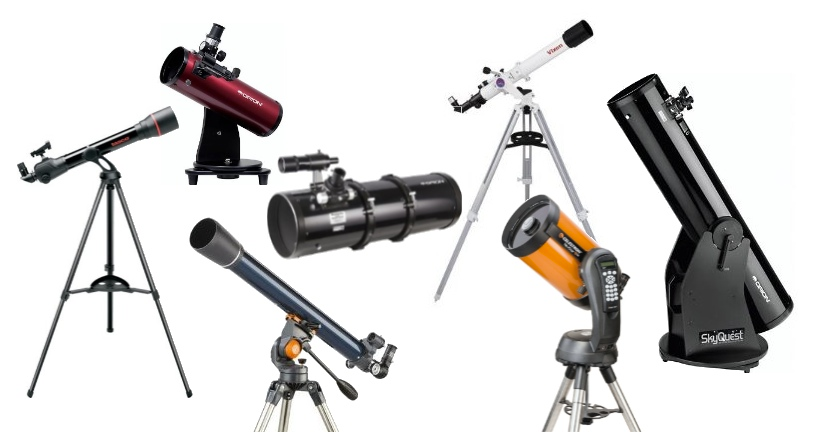

Presents
An Intro to Amateur Astronomy in Brisbane
by Mark Gasiorowski
Wednesday 20th April 2016
12:15 - 1:00pm
Training Room 3
An Intro to Amateur Astronomy in Brisbane

Want to find out a bit more about doing amateur astronomy in Brisbane, what's involved, and people who can help?
What are some of the best viewing spots, and how far do you really need to go to see something?
What are the different types of telescopes? Why are there so many? Which one is best, and how much do they cost?

What clubs are there around Brisbane where you can get help?
I'll touch on astrophotography - although that's a true rabbit hole!
I'm a member of two astronomy clubs in Brisbane, do regular presentations there, and helped run Qld Astrofest, so can help with any questions you might have.
And .. I'll be bringing along a serious amateur telescope (or two) for you to have a look at, and see how they work up close.
Come along and learn a bit about one of the most fantastic hobbies for you and your family!
See you there!
MarkG